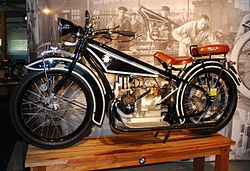

Volkswagen, Almanya'da, 1937 yılında tek model halk tipi otomobil üretimi için Nasyonal Sosyalist Alman İşçi Partisi tarafından Alman Otomotiv Birliğine kurdurulan otomobil firması. Şirketin adı, Almanca'da halkın arabası anlamına gelmektedir. Volkswagen AG bünyesinde hizmet verir. Brezilya'daki fabrikalarında VW Titan Tractor adıyla kamyon üretimine başlamıştır. Güney Afrika Cumhuriyeti'ndeki fabrikasında Volksbus adıyla otobüs üretmektedir. 1967'den beri Brezilya Sao Bernardo Campo fabrikasında üretilen Combi modeli, çağdaş güvenlik şartlarına uyum sağlayamadığı için Temmuz 2013'te üretimi durdurulmuştur. Volkswagen ABD'de aldığı ceza için slogan olarak "Volkswagen (Halkın Arabası)"i 2014 yazından beri kullanmaktadır. Volkswagen aslen Alman Emek Cephesi (Deutsche Arbeitsfront) tarafından 1937 yılında kuruldu.[1] 1940'tan sonra Alman savaş gücünü arttırmak için harekete geçirilen Volkswagenwerk (Wolfsburg), kara ve hava taşıtlarının, özellikle uzun menzilli V-1 ve V-2 güdümlü füzelerin yapımı için sanayi gücünü ordunun emrine verdi. II. Dünya Savaşı'ndan sonra Volkswagen'in denetimini, Millî İktisat Bakanlığı, Maliye Bakanlığı, Federal Almanya Cumhuriyeti, Aşağı Saksonya Hükümeti, fabrika yönetici ve personeli temsilcilerinden kurulu on beş kişilik bir kurul üzerine aldı. Volkswagen "biz teknoloji üretiriz, diğerleri uygular" sloganını doğrularcasına dünyanın ilk hava soğutmalı motor sistemini üretti. Bunun nedeni su soğutmalı motorların II. Dünya Savaşı sırasında Rusya'nın sert iklimine dayanamayıp zarar görmesinden kaynaklanır. 1948'de Heinz Nordhoff (Berlin-Charlottenburg Politeknik okulu mühendisi, doğ. 1899) tarafından yeniden teşkilatlandırılan Volkswagenwerk, 1950'den sonra başlangıçtaki üretim kapasitesine ulaştı. 1953'te Batı Almanya'nın en çok otomobil üreten fabrikası haline geldi. Volkswagen, Adolf Hitler'in Alman halkını otomobil sahibi yapmak için yaptığı en geniş kapsamlı proje olarak kabul ediliyor.
| Anasayfa | 1 | 2 | 3 | 4 | 5 | 6 | 7 | 8 | 9 | 10 | 11 | 12 | 13 | 14 | 15 | 16 | 17 | 18 | 19 | 20 |